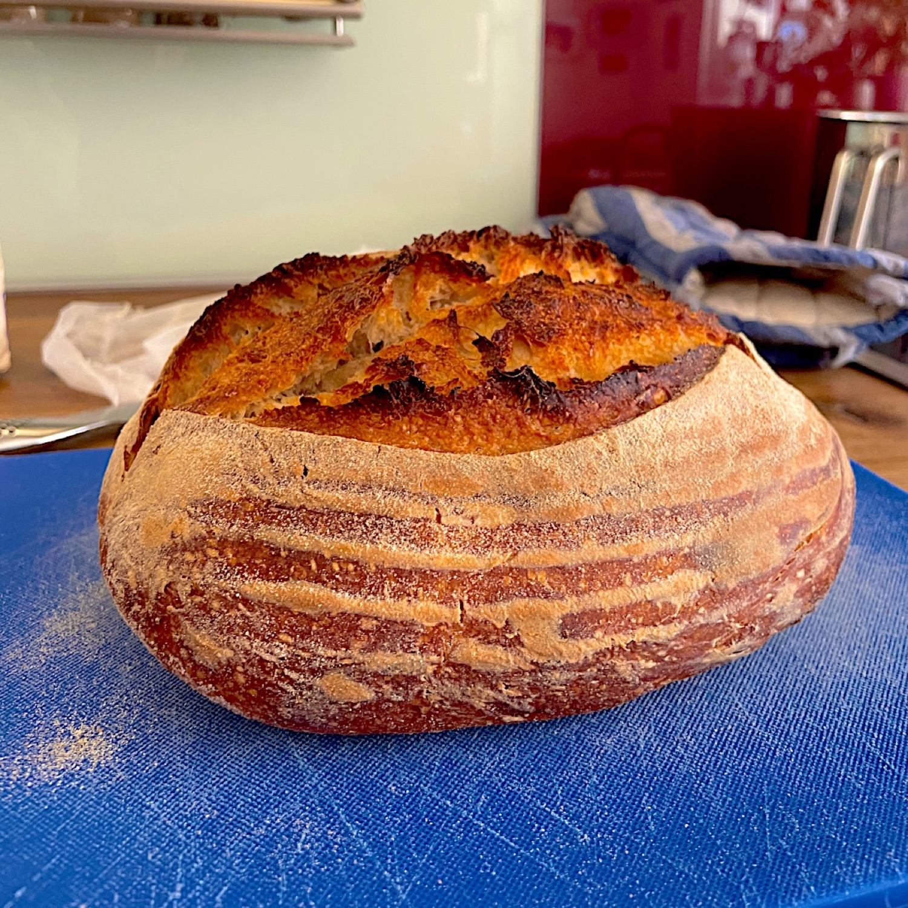

Blog / 18 November 2026
How to make a sourdough starter, day by day

A sourdough starter is flour and water, fed once a day until it rises and falls on its own. It takes about ten days in a warm kitchen and up to three weeks in a cool one. You do not add yeast. Everything needed is already on the flour.
That is the short version, and it is true. It also leaves out the part where the jar makes you doubt everything around day 4, so here is the long version, written by someone who needed a few attempts.
What you need
- Wholemeal or rye flour to begin with. The bran carries far more wild yeast and bacteria than white flour.
- Lukewarm water.
- A clean jar with a loose lid. It needs air, not a seal.
- A kitchen scale.
- Somewhere warm, around 24 to 26°C if you can.
- Patience. Sadly not available in shops.
Every feed is the same: discard all but 25 g, then add 25 g flour and 25 g lukewarm water. Small amounts work as well as large ones and put a quarter of the flour in the bin. I have wasted enough flour for both of us.
Day by day
| Day | What to do | What to expect |
|---|---|---|
| 1 | Mix 25 g flour and 25 g water to a thick paste. Cover loosely | Nothing. It is a paste in a jar |
| 2 | Look at it. Do not feed | Probably nothing. Perhaps a bubble or two |
| 3 | First feed | Often a big rise and a bad smell. This is a false start |
| 4 | Feed | The rise collapses. Sharp smell, sometimes like nail polish |
| 5 | Feed | Still quiet. The smell settles into sour |
| 6 | Feed | Small even bubbles, a slight dome, a beery smell |
| 7 | Feed twice a day if it rises and falls on its own. If not, stay on once | A visible rise between feeds |
| 8 | Feed. Mark the level with a rubber band | A clear rise and fall |
| 9 | Feed. Note how long it takes to reach its highest point | A reliable rise, domed on top |
| 10 | Feed | Doubling in four to eight hours, smelling clean and sour |
The days that mess with your head
Day 3 often looks like success. It is not your yeast. Fast bacteria get going first in fresh flour and water, they make a lot of gas, and they smell terrible. They also make the jar too sour for themselves. Enjoy the rise. Do not get attached.
Days 4 and 5 look like failure. The fast bacteria are dying off and the yeast you want is there but slow to start. This is the point where most people throw the jar away, and they should not. There is more on this in why a starter stops rising on day 4.
Day 6 is the turn. The smell changes from sharp to beery. From here it is about building enough of a population to raise a loaf.
Go by the jar
The days above are for a warm kitchen. A kitchen at 18°C can take three weeks to do what one at 26°C does in a week. A slow starter is a cold one, not a failing one. I would have liked to know that in January.
Two rules follow from that:
- Feed twice a day only once it rises and falls by itself. Feeding a jar that has barely moved dilutes it and keeps it weak.
- Smell tells you more than the date. Rotten and getting worse is a problem. Sour and settling down is progress.
From about day 7 you can move to the flour you plan to bake with. If that is rye, carry on with rye.
When it is ready
A starter is ready to bake with when it doubles in four to eight hours after a feed, and does it twice running. One good rise might just have been a warm afternoon.
Note how long it takes to reach its highest point. Every bake you plan works backwards from that number. Which feeding ratio to use shows how to move it to suit your day.
And give it a name. You are going to be talking to it anyway.
Starter School
Sourdough Diary has all of this as Starter School: one day at a time, with what to do, what to expect and why. It waits for the jar. If yours is still quiet on day 7, it holds you there until it is not, and it does not judge.